曼陀林製作工藝
第 10 章・建議學習 1.5 小時
Mandolin Making: Design, Construction, Assembly and Final Setup（曼陀林製作：設計、結構、組裝與完工設定）
本章重點
- 製琴順序是：先定幾何與用途 → 選材 → 琴體 → 琴頸與指板 → 琴格 → 裝飾與塗裝 → 上弦後設定。
- 三種琴體工法（圓背、雕刻、平背）用不同方式回答同一組力學問題。
- 琴體肋條越多不代表等級越高，因為材料、曲面和尺寸也一起在變。
- 上弦後的設定（final setup）是製造的一部分，不是售後服務。
- 歷史複製琴可以重建型制與材料，但複製琴仍是新的個體。
製琴從用途、尺寸與結構規劃開始，然後才進入加工和組裝。
一把曼陀林在第一刀落下之前，就已經有一連串決定：
- 弦長（scale length）
- 琴體容積
- 面板幾何
- 琴橋位置
- 弦張力
- 目標音域
- 琴頸角度
- 演奏用途
不同傳統之所以長得不同，是因為它們用不同的結構，回答同一組力學和聲學問題。
三種主要傳統不能簡單用同一套流程解釋：
| 傳統 | 中文 | 成形方式 |
|---|---|---|
| 那不勒斯圓背（Neapolitan bowlback） | 圓背琴 | 在模具上逐條拼肋條 |
| Gibson 雕刻琴體（carved-body） | 雕刻琴體 | 從厚板雕出拱度與厚度分布 |
| 現代平背／民謠曼陀林（flat-back / folk mandolin） | 平背琴 | 比較接近吉他家族的側背板組裝 |
理解工藝最好的方法，重點在知道每一步在控制哪個幾何和物理條件。
本章會沿著設計、選材、琴體、琴頸、琴格、裝飾、塗裝與完工設定的順序走一遍。
同時用 1784 年 Filano 琴的研究複製，和 1898 年 Gibson 專利，作為兩個對比案例。
10.1 設計目標與尺寸規劃
弦長（scale length）是最早就必須決定的參數之一。
因為它會牽動四件事：琴格間距（fret spacing）、琴頸長度、琴橋位置、弦張力。
現行常見規格如下：
| 品牌／型號 | 弦長 |
|---|---|
| Calace 曼陀林（mandolin） | 33.5 cm |
| Calace 曼陀拉（mandola） | 43.2 cm |
| Calace 曼陀隆切羅（mandoloncello） | 61 cm |
| Suzuki M-30 | 336 mm |
| Suzuki MD-4 | 426 mm |
| Suzuki MC-836 | 574 mm |
〔S711〕〔S712〕〔S713〕〔S714〕
這些數字背後的重點是：不同家族成員對演奏手感和音域，做出不同的折衷。
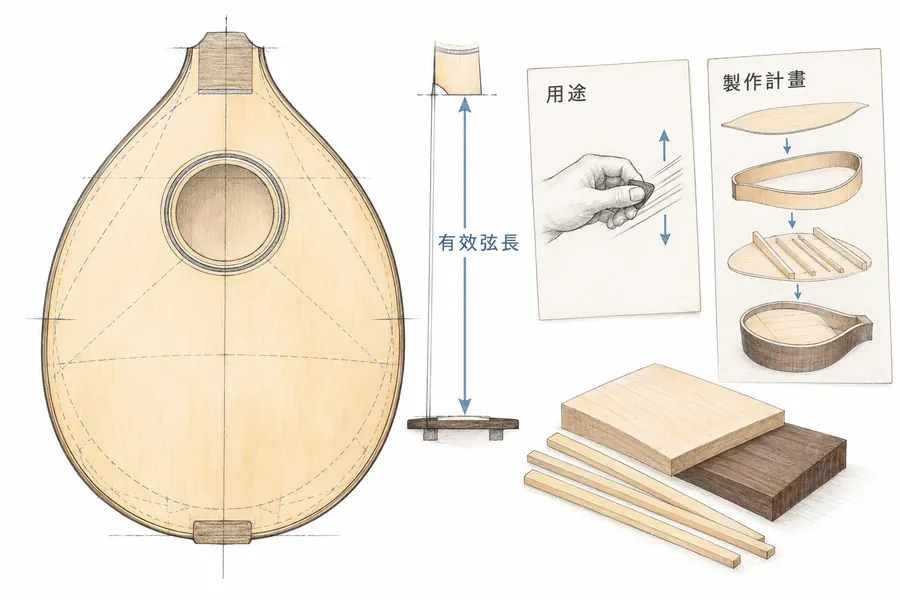
圖解 10.1 設計目標與尺寸規劃（示意）
接著要決定琴體形狀與受力系統。
| 琴型 | 決定體積與結構的關鍵 |
|---|---|
| 圓背（bowlback） | 琴肚深度、肋條曲率、折面面板 |
| 雕刻面板（carved-top） | 拱度（arching）與厚度分布（graduation） |
| 平頂（flat-top） | 更依賴力木（bracing） |
比較設計時，要一起確認外形、板材厚度與內部支撐。
專業製琴圖除了外形尺寸，還會包含這些關鍵資訊：
- 琴頸角度（neck angle）
- 目標琴橋高度（bridge height target）
- 指板平面（fingerboard plane）
- 音孔（soundhole）
- 力木（bracing）
- 面板厚度（top thickness）
這些尺寸彼此相依。
如果後期要靠設定（Setup）大幅補救，通常表示前期幾何已經有偏差。
| 重點與應用 | 內容 |
|---|---|
| 核心概念 | Scale length 是最早就必須決定的參數之一，因為它會牽動 fret spacing、琴頸長度、琴橋位置與弦張力。 |
| 關係與條件 | Suzuki 2017 型錄中的 M-30 是 336 mm、MD-4 是 426 mm、MC-836 是 574 mm。 |
| 應用方向 | 理解製琴流程與結構。 |
10.2 選材與初步加工
材料進到工坊後，製琴師會先評估每一片木料適合什麼用途。
他會觀察這些項目：
- 纖維是否筆直
- 有沒有跑切（runout）
- 密度和重量如何
- 彎曲時的剛性感
- 缺陷位置
- 可用尺寸
對天然材料來說，設計值往往要和實際木料互相調整。
這就是為什麼手工製琴不可能完全等同於電腦數值控制（Computer Numerical Control，CNC）複製。〔S707〕
含水率同樣重要。
木料應該先接近工坊與未來使用環境的合理平衡狀態。如果還沒達到，就在精密厚度下封箱，之後的收縮可能造成三件事：
- 接縫改變
- 拱度改變
- 琴頸幾何改變
乾燥的重點，是讓材料進入可預測的狀態。〔S708〕〔S723〕
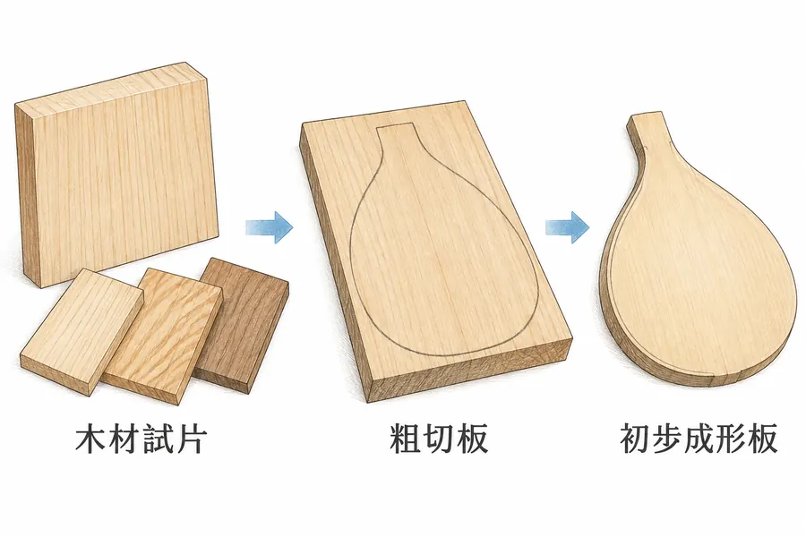
圖解 10.2 選材與初步加工（示意）
初加工時會留下餘量。
面板、背板、琴頸粗坯（neck blank）都不會一開始就做到最終尺寸。
因為後續的膠合、雕削與修整，還需要基準面。
常見誤解：「製琴的誤差主要是手抖。」
不是。很多誤差的重點在基準設置錯誤。
所以建立中心線（centerline）、模具基準（mold reference）和琴頸軸線（neck axis），是整個流程的基本功。
| 重點與應用 | 內容 |
|---|---|
| 核心概念 | 材料進工坊後，製琴師先評估每片木料適合的用途。 |
| 關係與條件 | 含水率同樣重要。 |
| 應用方向 | 理解製琴流程與結構。 |
10.3 圓背琴肚的製作
圓背製作通常依賴模具（mold）。
製琴師先建立琴體外形，再把窄肋條彎到所需曲率，逐條貼合並膠合。
每一條肋條很窄，單條誤差看起來不大。
但累積二十多條之後，就可能讓中心線偏移，或琴肚左右不對稱。
所以每一條接縫都要控制角度和貼合。
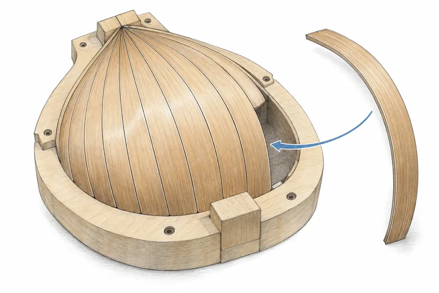
圖解 10.3 圓背琴肚的製作（示意）
歷史實物可以看到肋條數量差異很大：
| 樂器 | 肋條數 |
|---|---|
| Vinaccia 1781 | 23 條窄條（narrow strips） |
| Calace 現代常見 | 25、31、33 條 |
| Calace 曼陀隆切羅 | 可到 41 條 |
〔S701〕〔S711〕〔S713〕
肋條越多，單條通常越窄，曲面可以做得更細緻。
但工時與接縫數也跟著增加。
常見誤解：「肋條越多，等級越高。」
不能把肋條數量直接當成產品等級。
因為平滑肋條（smooth rib）／溝槽肋條（fluted rib）、材料與整體尺寸也都會一起變。
圓背內側還需要處理幾個位置：
- 肋條接縫（rib joints）
- 端木塊（end blocks）
- 琴頸接合區（neck joint）
- 面板接合邊
這些位置決定長期結構穩定。
如果拼接只追求外表無縫，內部接觸不足，日後在濕度循環和弦張力下就可能開膠。
| 重點與應用 | 內容 |
|---|---|
| 核心概念 | 圓背製作通常依賴 mold。 |
| 關係與條件 | 歷史實物可以看到 ribs 數量差異很大。 |
| 應用方向 | 理解製琴流程與結構。 |
10.4 那不勒斯折面面板
那不勒斯式的面板（soundboard）不是完全平的。
琴橋附近有一個折角（cant / bend），讓下半部面板形成折面。
大都會博物館（The Metropolitan Museum of Art，Met）對 Vinaccia 1781 有一段說明。它指出這是那不勒斯學派（Neapolitan school）的典型特徵。這種做法具有增加結構強度的作用。〔S701〕〔S722〕
製作這種面板，要同時控制四件事：
- 木材纖維
- 折彎位置
- 厚度
- 接合到琴肚的邊界
如果折線位置偏差，琴橋可能無法落在設計的幾何點上。
如果面板在折彎處過弱，長期壓力又可能造成變形。
這一段的重點，是把面板幾何納入結構設計。
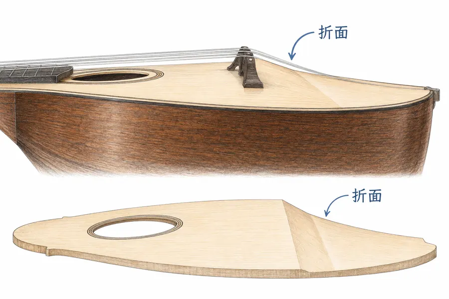
圖解 10.4 那不勒斯折面面板（示意）
1784 年的 Filano 研究琴，正好位於腸弦到金屬弦的歷史轉型期。
它保留了折面面板（bent soundboard）與混合腸弦—金屬弦（mixed gut–metal strings）。
研究團隊在複製之前，先做聲學量測。
這顯示歷史工法研究已經不只停在尺寸與外觀，而會把原琴的動態行為也記錄下來。〔S706〕
| 重點與應用 | 內容 |
|---|---|
| 核心概念 | 那不勒斯式 soundboard 不是完全平面。 |
| 關係與條件 | 製作這種面板要同時控制木材纖維、折彎位置、厚度與接合到 bowl 的邊界。 |
| 應用方向 | 理解製琴流程與結構。 |
10.5 雕刻拱面與厚度控制
Orville Gibson 1898 年的核心創新之一，是把面板和背板從較厚的木料雕成凸拱（convex arch）。
他的專利明確批評當時的結構：「太多彎板、拼接、貼皮與內部支撐」。
他主張更一體化的雕刻方式。
Met 保存的 1898 實物，可以看到：
- 雲杉雕刻面板（spruce carved top）
- 胡桃木雕刻背板（walnut carved back）
- 一體式側板／琴頸／琴頭
〔S702〕〔S703〕
雕刻（carving）不是只決定外表曲線。
製琴師要控制外拱、內凹，以及各區的厚度分布（thickness graduation）。
這些區域的厚度會共同決定剛性和模態：
- 板材中央
- 邊緣
- 琴橋區域（bridge area）
- 音孔周圍（soundhole）
這就是為什麼兩片外表看起來完全一樣的雕刻面板，聲學反應仍可能不同。
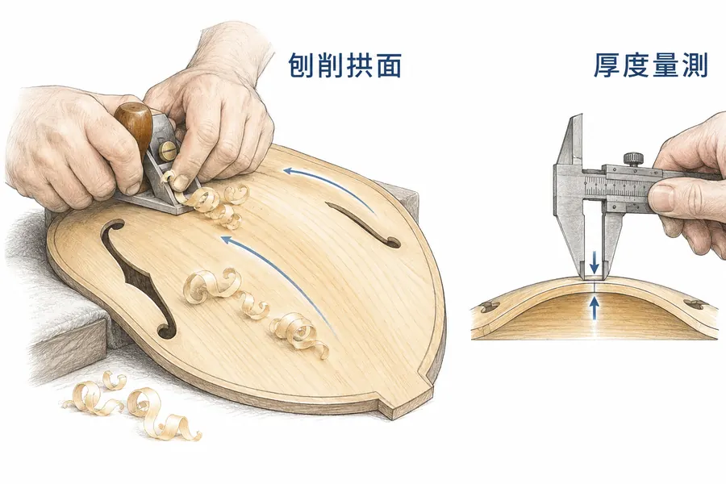
圖解 10.5 雕刻拱面與厚度控制（示意）
後來的 Gibson 系統，並沒有完全照 Orville 原始的「無力木」理念不變地延續。
它反而形成了更成熟的設計：力木、f 型音孔（f-hole）、琴橋位置等。
常見誤解：「一個發明完成後就固定不動。」
製琴史很少是這樣。
更常見的是：每一代都在原本的架構上重新調整。〔S719〕〔S720〕
| 重點與應用 | 內容 |
|---|---|
| 核心概念 | Orville Gibson 1898 的核心創新之一，是把 top 和 back 從較厚木料雕成 convex arch。 |
| 關係與條件 | carving 不是只決定外表曲線。 |
| 應用方向 | 理解製琴流程與結構。 |
10.6 平背與平面琴體
平背型的製作，通常需要：
- 彎側板肋條（side ribs）
- 安裝木塊（blocks）與襯條（linings）
- 把面板與背板膠合，形成箱體
外形看起來比圓背簡單，但側板彎曲（side bending）、邊框幾何（rim geometry）和力木的精度同樣關鍵。
對民謠曼陀林或某些曼陀琴（mandocello）來說，這種結構在製造、坐姿與收納上也有實務優勢。
Suzuki 2017 的 MC-836 就是玫瑰木平背琴身的曼陀琴案例。
它和同品牌的 M-30／MD-4 的多片圓背琴身不同。
這顯示一件事。同一家公司在家族的大型低音樂器上，也可能因為尺寸與演奏需求，選擇不同的琴體。〔S714〕
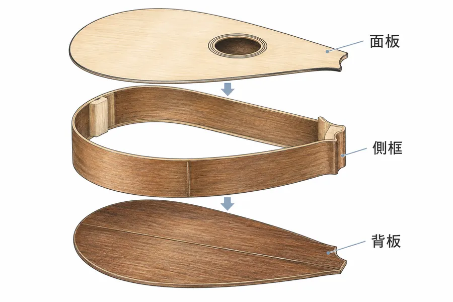
圖解 10.6 平背與平面琴體（示意）
常見誤解：「平背就是便宜簡化版。」
這不是可靠的分類方式。
確實有廉價的平背量產琴，但也有高階的手工平頂琴。
結構形式只描述做法，不直接等同品質。
| 重點與應用 | 內容 |
|---|---|
| 核心概念 | 平背型製作通常需要彎 side ribs、安裝 blocks 與 linings，再將 top/back 膠合形成箱體。 |
| 關係與條件 | Suzuki 2017 MC-836 就是 rosewood flat body 的 mandocello 案例，和該品牌 M-30／MD-4 的多片 round body 不同。 |
| 應用方向 | 理解製琴流程與結構。 |
10.7 力木與面板支撐
力木（bracing）會增加局部剛性，也會增加質量。
這是一個取捨：
| 做法 | 短期結果 | 長期風險 |
|---|---|---|
| 粗而重的力木 | 通常更安全 | 面板某些區域可能不易被驅動 |
| 過度削薄 | 聲音可能短期活躍 | 長期失去幾何 |
真正困難的地方是：把結構壽命和聲學目標同時放進設計。
製琴師常透過這些方法調整力木：
- 經驗
- 板材彎曲感
- 厚度
- 重量
- 甚至模態／敲擊響應（modal / tap response）
但這些方法並非單一公式。
聲學研究可以提供琴橋導納（bridge admittance）和模態資料。
但它仍然不能替代每片木材與實際工藝的判斷。〔S705〕
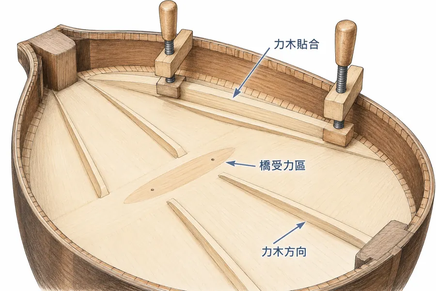
圖解 10.7 力木與面板支撐（示意）
常見誤解：「維修時加一根木條加強就好。」
不行。新力木會改變模態，還可能把濕度變形鎖在錯誤的幾何裡。
歷史琴修復尤其需要最小干預與可逆性思維。
| 重點與應用 | 內容 |
|---|---|
| 核心概念 | bracing 會增加局部剛性，也會增加質量。 |
| 關係與條件 | 製琴師常透過經驗、板材彎曲感、厚度、重量，甚至 modal/tap response 來調整 bracing，但這些方法並非單一公式。 |
| 應用方向 | 理解製琴流程與結構。 |
10.8 琴頸接合與指板
琴頸和琴體接合，必須控制三件事：
- 左右中心線（centerline）
- 琴頸角度（neck angle）
- 指板平面（fingerboard plane）的旋轉
只要其中一項偏差，就可能出現這些問題：
- 琴橋被迫移離中心
- 弦距左右不一致
- action 調整範圍不足
這些問題做對了幾乎看不見，做錯了卻會伴隨整把琴。
不同歷史型制的琴頸接合（neck joint）做法不一樣：
| 型制 | 接合方式 |
|---|---|
| Orville Gibson 原始設計 | 把側板、琴頸、琴頭高度整合 |
| 圓背琴（bowlback） | 常把琴頸塊與琴肚肋條結合 |
| 現代量產 | 可能使用更標準化的接合 |
〔S703〕
理解這些差異對中古琴維修很重要。
因為琴頸重設（neck reset）的方法不能跨結構照搬。
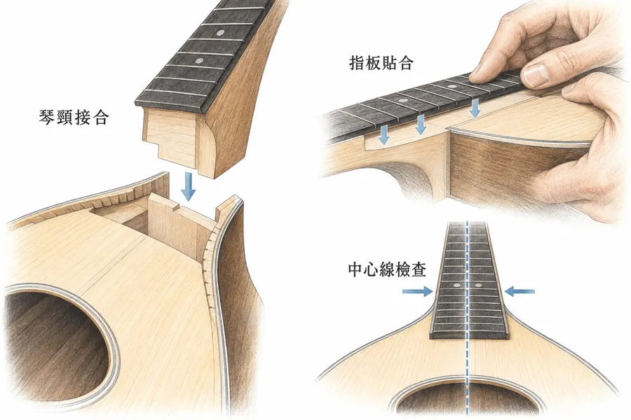
圖解 10.8 琴頸接合與指板（示意）
指板黏合前，還要考慮弦長基準（scale reference）和琴格槽位置（fret slot）。
指板延伸（fingerboard extension）越長，高把位就越多。
但它對面板的覆蓋和支撐也可能增加。
Calace 音樂會型號的 29 格，就代表完全不同於早期 Vinaccia 13 格的演奏需求。〔S701〕〔S711〕
| 重點與應用 | 內容 |
|---|---|
| 核心概念 | 琴頸和琴體接合必須控制三件事：左右 centerline、neck angle、以及 fingerboard plane 的旋轉。 |
| 關係與條件 | 不同歷史型制的 neck joint 做法不一。 |
| 應用方向 | 理解製琴流程與結構。 |
10.9 琴格安裝與整平
在十二平均律（twelve-tone equal temperament）下，琴格位置按照固定比例縮短弦長。
槽位切錯，即使只有小誤差，也可能在高把位累積成聽得出來的偏差。
安裝後還要確保兩件事：
- 琴格坐實（seated）完整
- 頂冠（crown）高度一致
否則就會出現打弦（buzz）和死音（dead spot）。
琴格整平（fret leveling）的目標，是在預定的琴頸曲度（neck relief）和弦路（string path）下，建立一個一致可用的平面。
之後要把頂冠重新塑形，讓琴弦在很窄的接觸線上離開琴格。
如果頂冠磨得太平，實際發音點會變模糊，影響音準（intonation）。
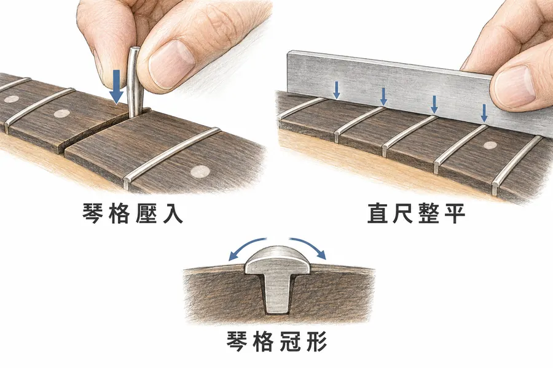
圖解 10.9 琴格安裝與整平（示意）
歷史教本和現代樂器的格數差異，也提醒我們一件事：
琴格數量與製作品質，也會影響可用曲目。
Munier 1891 年的教本，描述當時的曼陀林琴頸／指板和第一把位系統。
現代音樂會用曼陀林則把高把位需求推得更遠。〔S717〕〔S711〕
| 重點與應用 | 內容 |
|---|---|
| 核心概念 | 在十二平均律下，fret 位置按照固定比例縮短弦長。 |
| 關係與條件 | Fret leveling 的目標重點在在預定 neck relief 和 string path 下建立一致可用的平面。 |
| 應用方向 | 理解製琴流程與結構。 |
10.10 鑲嵌、裝飾與護板
邊飾（binding）和內嵌線（purfling）常被當成裝飾。
但它們也能保護板材邊緣、覆蓋接縫、形成視覺基準。
傳統圓背的護板（pickguard / scudo），則負責防止撥片和手部摩擦直接磨損柔軟的雲杉面板。
Vinaccia 1781 的珍珠母、玳瑁與金屬鑲嵌非常華麗。
這證明高級歷史樂器的裝飾，本身也承載社會地位與工藝價值。〔S701〕
不過裝飾並非「完全不影響聲音」。
厚重的鑲嵌（inlay）、大片護板或過量膠合，都會改變局部質量與剛性。
影響可能很小，也可能在薄面板上大到可以量測。
專業製琴會把裝飾設計納入結構，預先評估裝飾的重量與位置。
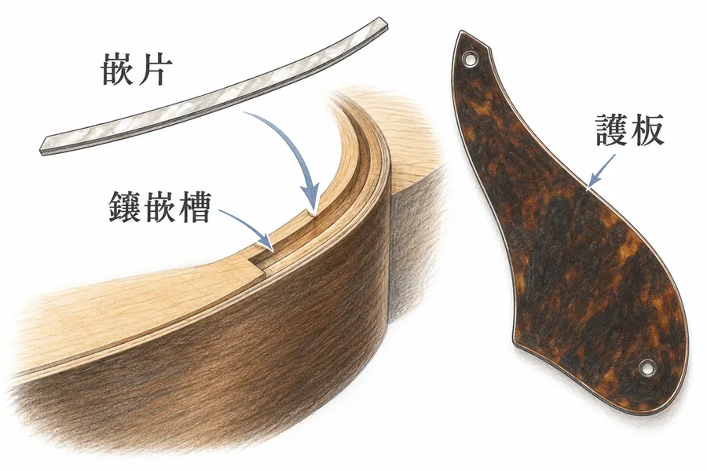
圖解 10.10 鑲嵌 裝飾與護板（示意）
現代保育還要考慮材料倫理與法規。
歷史上使用象牙（ivory）、玳瑁（tortoiseshell）等材料，不代表今天應該複製原材料。
現代修復和復刻常採用替代材料，並在文件中清楚記錄。
| 重點與應用 | 內容 |
|---|---|
| 核心概念 | Binding 和 purfling 常被當成裝飾，但它們也能保護板材邊緣、覆蓋接縫並形成視覺基準。 |
| 關係與條件 | 不過裝飾並非「完全不影響聲音」。 |
| 應用方向 | 理解製琴流程與結構。 |
10.11 塗裝與表面保護
塗裝最直接的功能有四項：
- 保護表面
- 控制髒污
- 控制水氣交換速度
- 提供視覺和觸感
常見塗料各有不同的施工、修補與耐用性：
| 塗料 | 中文 | 說明 |
|---|---|---|
| shellac / French polish | 蟲膠／法式拋光 | 施工方式與修補特性不同 |
| nitrocellulose lacquer | 硝化纖維素漆 | 施工方式與修補特性不同 |
| 各式現代 varnish | 現代清漆 | 施工方式與修補特性不同 |
把塗裝簡化成「薄的一定響、厚的一定悶」並不充分。
因為配方、固化、厚度和基材都會改變結果。
對薄面板來說，塗層確實會增加質量、改變表面阻尼。
所以理論上會影響振動。
但在成品琴上，這個影響和面板厚度、力木、琴橋、弦等因素混在一起，很難從品牌名稱直接預測。
最可靠的原則仍然是：適量、均勻、符合設計。
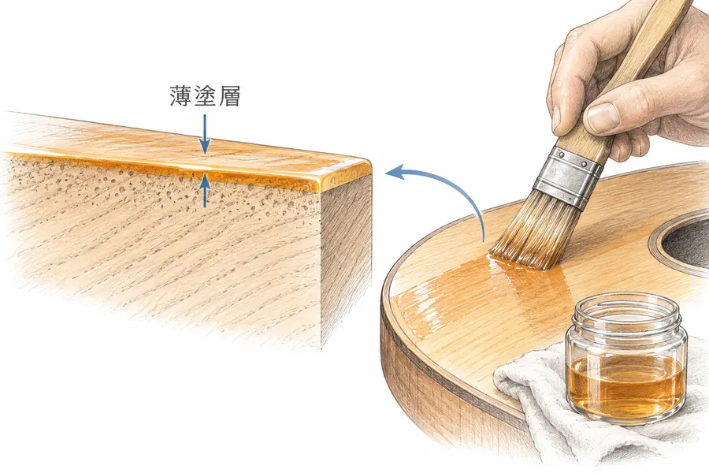
圖解 10.11 塗裝與表面保護（示意）
老琴的重新塗裝（refinish）則是另一個問題。
重新磨掉原塗裝，可能同時移除木材、邊角和歷史資訊。
過厚的新漆也會改變外觀與材料。
判斷收藏價值時，要先確認原裝程度與修復紀錄，再評估塗裝外觀。
| 重點與應用 | 內容 |
|---|---|
| 核心概念 | 塗裝最直接的功能是保護表面、控制髒污與水氣交換速度、提供視覺和觸感。 |
| 關係與條件 | 對 thin soundboard 而言，塗層確實增加質量和改變表面阻尼，因此理論上會影響振動。 |
| 應用方向 | 理解製琴流程與結構。 |
10.12 完工設定與校正
一把剛完成的琴在上弦後，弦張力會讓整體幾何重新受力。
製琴師需要檢查這些項目：
- 琴頸曲度（neck relief）
- 上弦枕槽（nut slots）
- 琴橋高度（bridge height）
- 琴橋位置（bridge location）
- 音準（intonation）
- 琴格打弦（fret buzz）
這些步驟是製造的一部分。
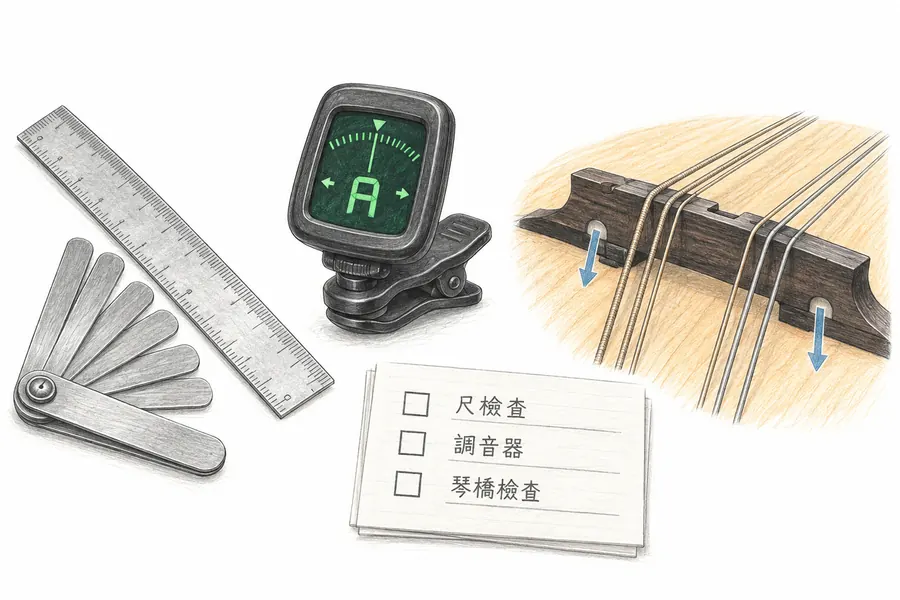
圖解 10.12 完工設定與校正（示意）
浮動琴橋（floating bridge）尤其需要在真正的弦張力下定位。
流程是：
- 先用弦長建立初始位置。
- 再透過十二格等方法做補償。
- 同時確認橋腳完全貼合面板。
如果把琴橋歪到極端角度才勉強準，應該回頭檢查這幾項：
- 上弦枕（nut）
- 琴格尺度（fret scale）
- 弦徑（string gauge）
- 整體幾何（geometry）
找出音準偏差的真正來源。
真正成熟的完工品管（final QC），還會在不同力度下彈奏。
因為有些問題只有實際演奏才會暴露：
| 檢查項目 | 要聽什麼 |
|---|---|
| 低音弦組（bass course） | 是否打弦 |
| 顫音（tremolo） | 兩弦是否同步 |
| 和弦（chord） | 低把位是否偏尖 |
| 調音後 | 弦軸／機械是否回滑 |
| 重點與應用 | 內容 |
|---|---|
| 核心概念 | 一把剛完成的琴在上弦後，弦張力會讓整體幾何重新受力。 |
| 關係與條件 | 浮動琴橋尤其需要在真正弦張力下定位。 |
| 應用方向 | 理解製琴流程與結構。 |
10.13 案例：Filano 歷史琴的複製
Filano 1784 的研究複製案，非常適合作為製琴科學的案例。
研究者的流程是：
- 先對原琴做非破壞聲學量測。
- 再建立有限元素模型（finite element model）。
因為他們知道：只抄尺寸和木種，不足以保證聲音相同。
天然木材的機械性質會變。
歷史膠合、老化和原琴的微小幾何，也不可能完全重建。〔S706〕
科學複製的目標可以分清楚：
可以重建型制、尺度、材料類型與可觀察工藝，並把聲學響應當作校準目標之一。
但複製琴仍然是新的個體。
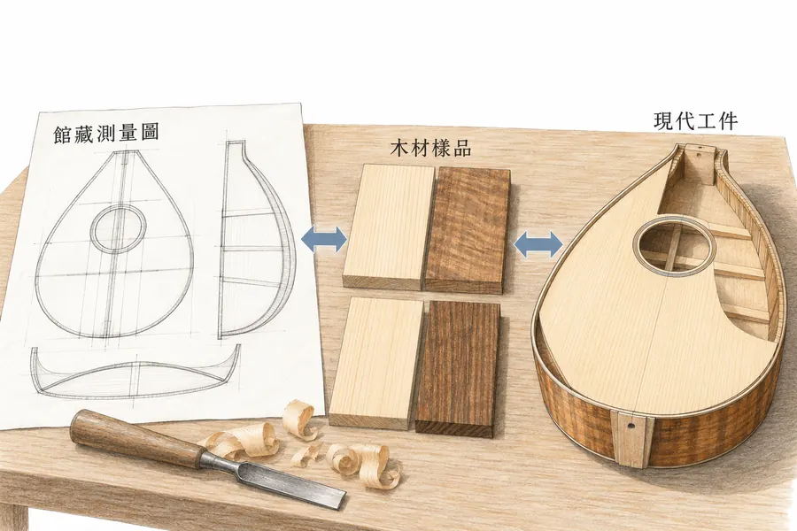
圖解 10.13 案例 Filano 歷史琴的複製（示意）
對一般製琴也一樣。
圖面是起點。
真正的工藝在於：如何讓這塊特定的木料達到設計目標。
這就是手工製琴最難被「照尺寸複製」取代的部分。
表 10-1｜三種主要琴體工法，工作重點不同
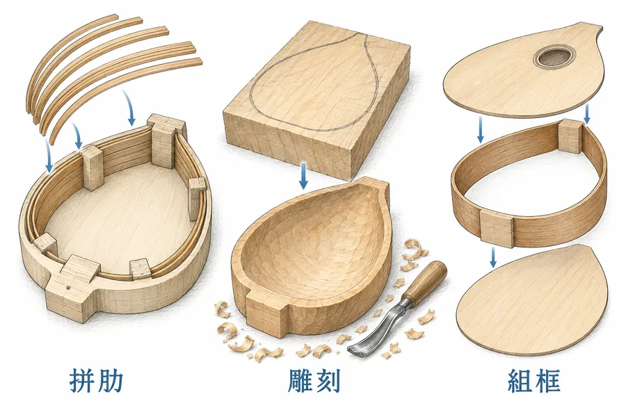
| 型制 | 主要成形方式 | 最關鍵幾何 | 典型風險 |
|---|---|---|---|
| Bowl-back（圓背） | mold（模具）上逐條 ribs（肋條）拼合 | bowl（琴肚）對稱、top bend（面板折彎）、neck axis（琴頸軸線） | 接縫累積誤差、open seam（接縫開膠） |
| Carved-top/back（雕刻面板／背板） | 厚板雕拱與 graduation（厚度分布） | arching（拱度）、厚度分布、bridge plane（琴橋平面） | 過厚／過薄、橋腳 fitting（貼合） |
| Flat-back/top（平背／平頂） | 彎 sides（側板）＋ blocks/linings（木塊／襯條）＋ plates（板） | rim 平面（邊框平面）、bracing（力木）、neck angle（琴頸角度） | 側板變形、bracing 不平衡 |
圖解 表 10-1｜三種主要琴體工法，工作重點不同（示意）
| 【工藝觀念】 真正的製琴順序是：先定幾何與用途 → 選材 → 建立琴體結構 → 琴頸與指板 → fretwork → 表面與裝飾 → 上弦後 final setup。不是「木工完成」就等於樂器完成。 |
|---|
| 【歷史案例】 Orville Gibson 1898 的原始設計強調 carved construction 與減少傳統內部零件；1784 Filano 研究則展示現代歷史複製如何把聲學量測納入工藝。兩者相隔百餘年，卻都在回答「如何讓結構更有效工作」。 |
|---|
自我學習題庫

學習檢查：作答、核對、複習
先自己作答，再看答案。答錯時回到本章相關小節重新讀一次。
1. Bowl-back 製作的重要工序之一是？
-
A. 在 mold 上逐條拼 ribs
-
B. 用一塊塑膠壓成
-
C. 取消面板
-
D. 只靠螺絲組裝
2. Fret leveling 的主要目標是？
-
A. 讓所有 fret 看起來一樣亮
-
B. 建立一致可用的弦路平面
-
C. 改變琴頭角度
-
D. 增加琴體重量
3. Final setup 應該被視為？
-
A. 製造流程的一部分
-
B. 完全無關
-
C. 只屬於買家工作
-
D. 只有舊琴才需要
答案：1.A 2.B 3.A
本章主要查證來源

查證來源：找原文、核條件、留紀錄
【S701】The Metropolitan Museum of Art：Mandolin, Antonius Vinaccia, Naples, 1781（Met 89.4.2140）。 那不勒斯式圓背、23 條琴肚肋條、折面面板、八弦四 course、13 格等實物資料。
https://www.metmuseum.org/art/collection/search/504543
【S702】The Metropolitan Museum of Art：Mandolin, Orville Gibson, 1898（Met 2015.643a–c）。 carved spruce top、carved walnut back、浮動琴橋、尾弦板、18 格、空心琴頸等實物資料。
https://www.metmuseum.org/art/collection/search/700485
【S703】United States Patent Office / Google Patents：US598245A – Mandolin, Orville H. Gibson（patented 1898-02-01）。 Gibson 一體式 rim/neck/head、carved top/back 與減少傳統內部支撐的原始專利。
https://patents.google.com/patent/US598245A/en
【S705】Quintavalla et al.：The Acoustics of Traditional Italian Mandolins and Their Relation with Soundboard Wood Properties（International Journal of Wood Culture 2, 2022）。 義大利歷史與現代曼陀林的 bridge admittance、聲輻射、模態與 soundboard wood 研究。
https://www.sciencedirect.com/org/science/article/pii/S2772318622000017
【S706】Quintavalla et al.：Acoustical Survey and Finite Element Analyses of Late Baroque Mandolin（International Journal of Wood Culture 4(1), 2024）。 1784 Joseph Filano 曼陀林的聲學量測、有限元素分析與複製研究。
https://www.sciencedirect.com/org/science/article/pii/S2772318624000018
【S707】USDA Forest Products Laboratory：Wood Handbook—Wood as an Engineering Material（FPL-GTR-282, revised 2021）。 木材結構、物理性質、機械性質、乾燥、膠合與材料工程基礎。
https://research.fs.usda.gov/fpl/wood-handbook
【S708】Glass & Zelinka, USDA Forest Products Laboratory：Moisture relations and physical properties of wood（Wood Handbook Chapter 4, 2021）。 木材吸濕、平衡含水率、收縮膨潤與尺寸穩定的官方技術資料。
https://research.fs.usda.gov/treesearch/62243
【S711】Liuteria Calace：Mandolini – official specifications（accessed 2026-10-06）。 33.5 cm 弦長、24/29 格、25/31/33 ribs、spruce top、rosewood/maple body 等現行規格。
https://www.calace.it/en/mandolini
【S712】Liuteria Calace：Mandole – official specifications（accessed 2026-10-06）。 43.2 cm（部分可 45.6 cm）scale、G/C 調 mandola、25/33 ribs 與材料配置。
https://calace.it/en/mandole
【S713】Liuteria Calace：Mandoloncelli & Liuti – official specifications（accessed 2026-10-06）。 61 cm scale、8/10 弦、25/41 ribs、不同琴體尺寸與材料配置。
https://calace.it/en-mandoloncelli-liuti
【S714】Suzuki Music / Suzuki Violin：2017 String Instrument Catalog（2017）。 M-30、M-100、MD-4、MD-10、MC-836 的弦長、木材與規格。
https://www.suzuki-music.co.jp/app/uploads/2017catalog14.pdf
【S719】The Metropolitan Museum of Art：Gibson F-2, F-4, A-4 and H-2/H-4 instruments（1916–1919 collection records）。 早期 Gibson A/F/H 系列 carved construction、格數、琴頸／指板材料與浮動琴橋實物比較。
https://www.metmuseum.org/art/collection/search/506859
【S720】The Metropolitan Museum of Art：Archtop Guitars and Mandolins（Met Heilbrunn Timeline essay）。 Orville Gibson carved archtop 系統與其美國製琴影響。
https://www.metmuseum.org/essays/archtop-guitars-and-mandolins
【S722】The Metropolitan Museum of Art：Mandolin, 1781 – Guitar Heroes（exhibition essay）。 那不勒斯式折面提高結構強度、四組複弦、小提琴式調弦與撥片使用背景。
https://blog.metmuseum.org/guitarheroes/mandolin-1781/
【S723】USDA Forest Products Laboratory：Drying and control of moisture content and dimensional changes（technical report / Wood Handbook）。 乾燥、平衡含水率與尺寸變化控制。
https://research.fs.usda.gov/treesearch/37419